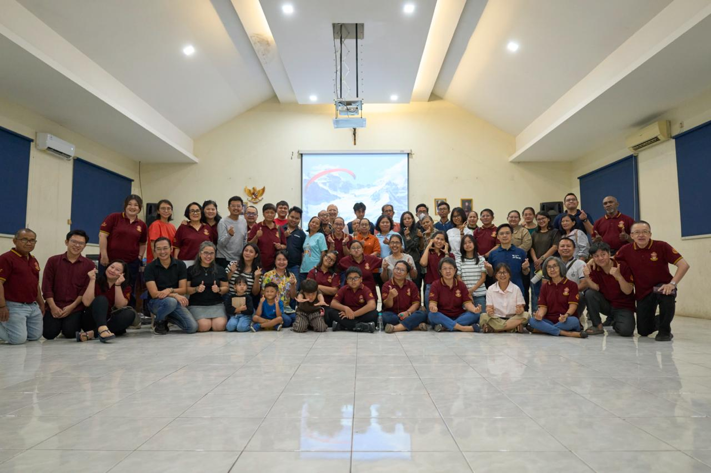
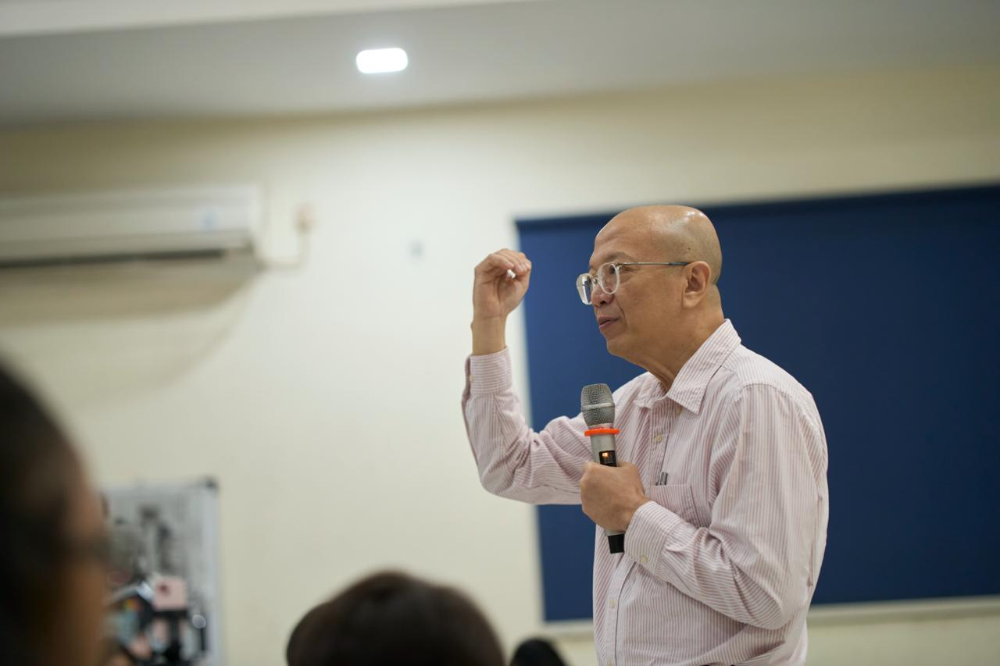
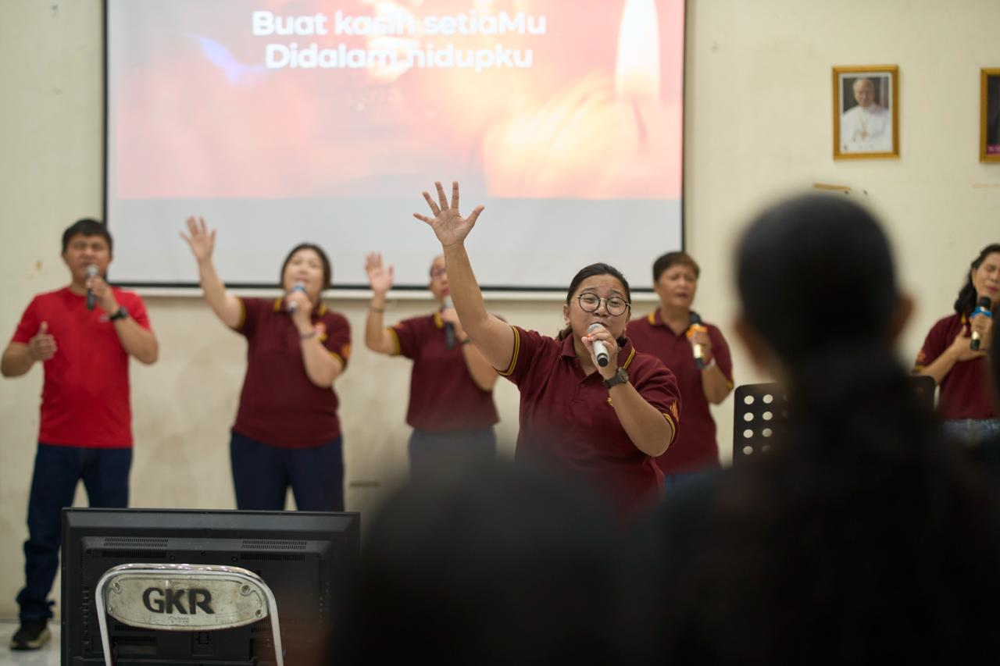

KARAWANG — Suasana penuh sukacita dan kebersamaan mewarnai kegiatan Persekutuan Doa Pembaruan Karismatik Katolik (PDPKK) Gereja Kristus Raja Karawang yang diselenggarakan pada Jumat, 20 November 2026, bertempat di Aula St. Agustinus Lantai 2. Kegiatan ini dihadiri oleh kurang lebih 48 umat yang berkumpul untuk berdoa, memuji Tuhan, serta mendengarkan pewartaan firman Tuhan yang dibawakan oleh dr. Yohanes dari Komunitas Amazing Grace.
Mengangkat tema “Berjalan dalam Terang Menuju ke Rumah Bapa di Surga”, dengan dasar Kitab Suci Yohanes 14:1-7 dan Mazmur 119:105-112, pewartaan kali ini mengajak umat untuk kembali menyadari bahwa kehidupan manusia merupakan sebuah perjalanan iman menuju rumah Bapa di surga. Dalam pewartaannya, dr. Yohanes mengingatkan bahwa perjalanan hidup tidak selalu berjalan mudah. Ada kalanya kita melewati masa-masa penuh sukacita, tetapi ada pula saat ketika kita harus menghadapi kegelisahan, sakit, kehilangan, pergumulan, dan ketidakpastian akan masa depan.

Lebih lanjut, pewartaan mengajak umat untuk menjadikan Firman Tuhan sebagai pelita dalam menjalani kehidupan. Seperti tertulis dalam Mazmur 119:105, “Sabda-Mu itu pelita bagi kakiku dan terang bagi jalanku.” Firman Tuhan diibaratkan sebagai pelita yang menerangi langkah demi langkah. Tuhan mungkin tidak selalu memperlihatkan seluruh jalan yang akan kita lalui, tetapi Ia senantiasa memberikan terang untuk setiap langkah yang perlu kita ambil. Karena itu, umat diajak untuk terus berjalan dalam iman, ketaatan, dan kesetiaan kepada-Nya.
Melalui kisah Tomas dalam Yohanes 14, umat juga diajak untuk menyadari bahwa Yesus bukan sekadar penunjuk jalan, melainkan Dia sendiri adalah jalan menuju Bapa. Sebagaimana ditegaskan dalam Yohanes 14:6, “Akulah jalan dan kebenaran dan hidup. Tidak ada seorang pun yang datang kepada Bapa, kalau tidak melalui Aku.” Pesan utama dari pewartaan ini adalah agar setiap umat tidak mudah menyerah ketika menghadapi tantangan kehidupan. Tetaplah melangkah bersama Yesus, berpegang pada Firman-Nya, dan percaya bahwa setiap perjalanan iman akan membawa kita semakin dekat kepada rumah Bapa di surga.

Melalui persekutuan doa ini, umat diharapkan semakin dikuatkan untuk menjalani kehidupan dengan hati yang tidak mudah gelisah, iman yang teguh, serta semangat untuk terus berjalan dalam terang Tuhan. Kegiatan PDPKK GKR Karawang ini menjadi kesempatan yang berharga bagi umat untuk semakin bertumbuh dalam iman, mempererat persaudaraan, dan mengalami kekuatan Tuhan melalui doa serta pewartaan firman-Nya.
Puji Tuhan, seluruh rangkaian kegiatan berlangsung dengan lancar. Semoga setiap umat yang hadir membawa pulang kekuatan, pengharapan, dan semangat baru untuk terus berjalan bersama Yesus, sampai kelak tiba di Rumah Bapa di Surga. “Tuhan Yesus, terangilah jalan kami dan tuntunlah setiap langkah hidup kami agar senantiasa setia berjalan dalam terang-Mu.”